Overview
This week we first explore the design of key-value/NoSQL storage systems. This topic is important because it shows how industry-popular systems leverage some of the concepts we’ve learned so far in the course. For instance, you will see concepts from some topics, like P2P systems and Membership, reused in our discussion of key-value/NoSQL storage systems. Also in Week 4 we begin to dive into the core distributed algorithms and theoretical concepts that underlie distributed systems. Week 4 features an introduction to time, synchronization, and logical timestamps (like Lamport timestamps).
Goals and Objectives
After you actively engage in the learning experiences in this module, you should be able to:
- Know why key-value/NoSQL are gaining popularity
- Know the design of Apache Cassandra
- Know the design of Apache HBase
- Use various time synchronization algorithms
- Apply Lamport and vector timestamps to order events in a distributed system
Key Phrases/Concepts
Keep your eyes open for the following key terms or phrases as you complete the readings and interact with the lectures. These topics will help you better understand the content in this module.
- Key-value and NoSQL stores
- Cassandra system
- CAP theorem
- Consistency-availability tradeoff and spectrum
- Eventual consistency
- HBase system
- ACID vs. BASE
- Time synchronization algorithms in asynchronous systems: Cristian’s, NTP, and Berkeley algorithms
- Lamport causality and timestamps
- Vector timestamps
Guiding Questions
Develop your answers to the following guiding questions while completing the assignments throughout the week.
- Why are key-value/NoSQL systems popular today?
- How does Cassandra make writes fast?
- How does Cassandra handle failures?
- What is the CAP theorem?
- What is eventual consistency?
- What is a quorum?
- What are the different consistency levels in Cassandra?
- How do snitches work in Cassandra?
- Why is time synchronization hard in asynchronous systems?
- How can you reduce the error while synchronizing time across two machines over a network?
- How does HBase ensure consistency?
- What is Lamport causality?
- Can you assign Lamport timestamps to a run?
- Can you assign vector timestamps to a run?
Why key-value/ NoSQL
The key-value abstraction
- Example:
- (Business) Key -> Value
- (amazon.com) Item number -> information about it
- It’s a dictionary datastructure.
- Insert, lookup, and delete by key
- E.g., hash table, binary tree
- But distributed, like distributed hash
tables (DHT) in P2P systems - It’s not surprising that key-value stores reuse many techniques from DHTs.
RDBMSs
- Data stored in tables
- Schema-based, i.e., structured tables
- Each row (data item) in a table has a primary key that is unique within that table
- Queried using SQL (Structured Query Language)
- Supports joins
RDBMSs’s mismatch for today’s workload
- Data: Large and unstructured
- Lots of random reads and writes
- Sometimes write-heavy
- Foreign keys rarely needed
- Joins infrequent
Needs of today’s workload
- Speed
- Avoid Single Point of Failure (SPOF)
- Low TCO (Total cost of operation)
- Fewer system administrators
- Incremental scalability
- Scale out, not up
- Scale up = grow your cluster capacity by replacing with more powerful machines
- Scale out = incrementally grow your cluster capacity by adding more COTS machines (Components Off the Shelf)
Key-value data model
- NoSQL = “Not Only SQL”
- Necessary API operations: get(key) and put(key, value)
- And some extended operations, e.g., “CQL” in Cassandra key-value store
- Tables
- “Column families” in Cassandra, “Table” in HBase, “Collection” in MongoDB
- May be unstructured: May not have schemas
- Some columns may be missing from some rows
- Don’t always support joins or have foreign keys
- Can have index tables, just like RDBMSs
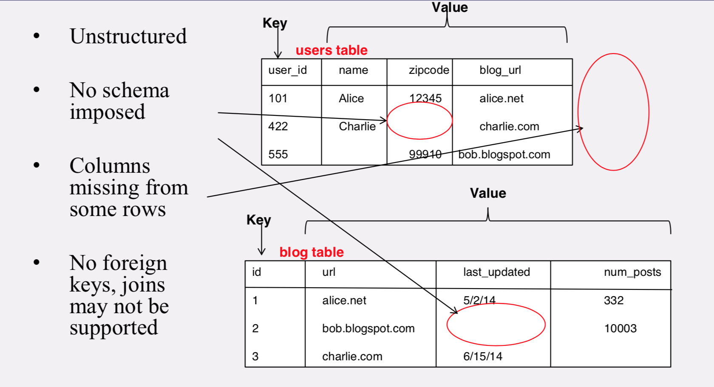
Column-oriented storage
- RDBMSs store an entire row together (on disk or at a server)
- NoSQL systems typically store a column together (or a group of columns).
- Entries within a column are indexed and easy to locate, given a key (and vice-versa)
- Why useful?
- Range searches within a column are fast since you don’t need to fetch the entire database
- Don’t need to fetch the other columns
CAP Theorem
- Consistency: all nodes see same data at any time, or reads return latest written value by any client
- Availability: the system allows operations all the time, and operations return quickly
- Partition-tolerance: the system continues to work in spite of network partitions(分区容错性)
Since partition-tolerance is essential in today’s cloud computing systems, CAP theorem implies that a system has to choose between consistency and availability
Eventual Consistency
- If all writes stop (to a key), then all its values (replicas) will converge eventually.
- If writes continue, then system always tries to keep converging.
- May still return stale values to clients (e.g., if many back-to-back writes).
- But works well when there a few periods of low writes – system converges quickly.
RDBMSs Vs. Key-value Store
- Cassandra: Eventual (weak) consistency, availability, partition-tolerance
- Basically Available Soft-state Eventual
consistency - Prefers availability over consistency
- Basically Available Soft-state Eventual
- Traditional RDBMSs: Strong consistency over availability under a partition
- Atomicity
- Consistency
- Isolation
- Durability
Cassandra
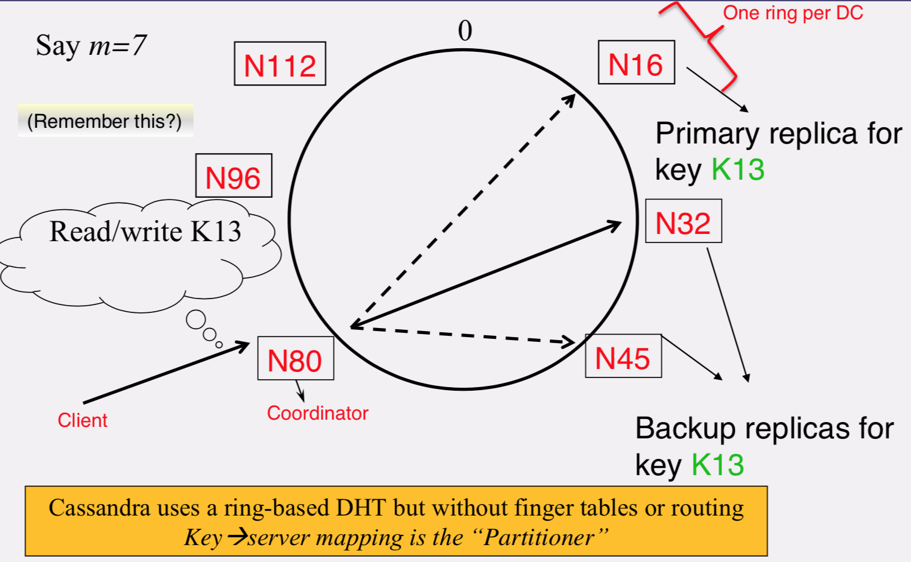
SSTable
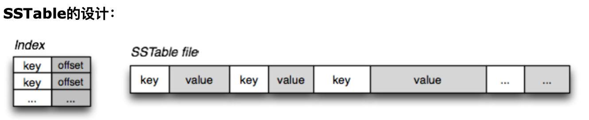
所以SSTable是一个简单，但是非常有用的用来交换大量的、排好序的数据片段的数据结构。它的使用场景是：
- 需要高效地存储大量的键-值对数据
- 数据是顺序写入
- 要求高效地顺序读写
- 没有随机读取或者对随机读取性能要求不高
SSTable提供一个可持久化[persistent]，有序的、不可变的从键到值的映射关系，其中键和值都是任意字节长度的字符串。SSTable提供了以下操作：按照某个键来查询关联值，可以指定键的范围，来遍历其中所有的键值对。每个SSTable内部由一系列块(block)组成(通常每块大小为64KB，是可配置的)。使用存储在SSTable结尾的块索引(block index)来定位块；当SSTable打开时，索引会被加载到内存里。一次磁盘寻道(disk seek)就可以完成查询(lookup)操作：首先通过二分查找在存储在内存的索引中找到对应的块，然后从磁盘上读取这块内容。SSTable也可以完整地映射到内存里，这样在执行查询和扫描(scan)的时候就不用操作磁盘了.
Partitioner
Mapping from key to server is called the “Partitioner” and that is what is used by the coordinator here to find out which are the replica servers to forward
Data Placement Strategies
Replication Strategy, two options:
- SimpleStrategy
- RandomPartitioner: Chord-like hash partitioning
- ByteOrderedPartitioner: Assigns ranges of keys to servers. Easier for range queries (e.g., get me all twitter users starting with [a-b])
当使用Cassandra CLI 命令行工具创建keyspace时的默认副本放置策略。假定根据partitioner得到第一个节点设为N1，它的顺时针的节点为N2，N3…则这种策略会把keyspace的第一个副本放置在N1上，然后其他副本依次放置在N2，N3..上
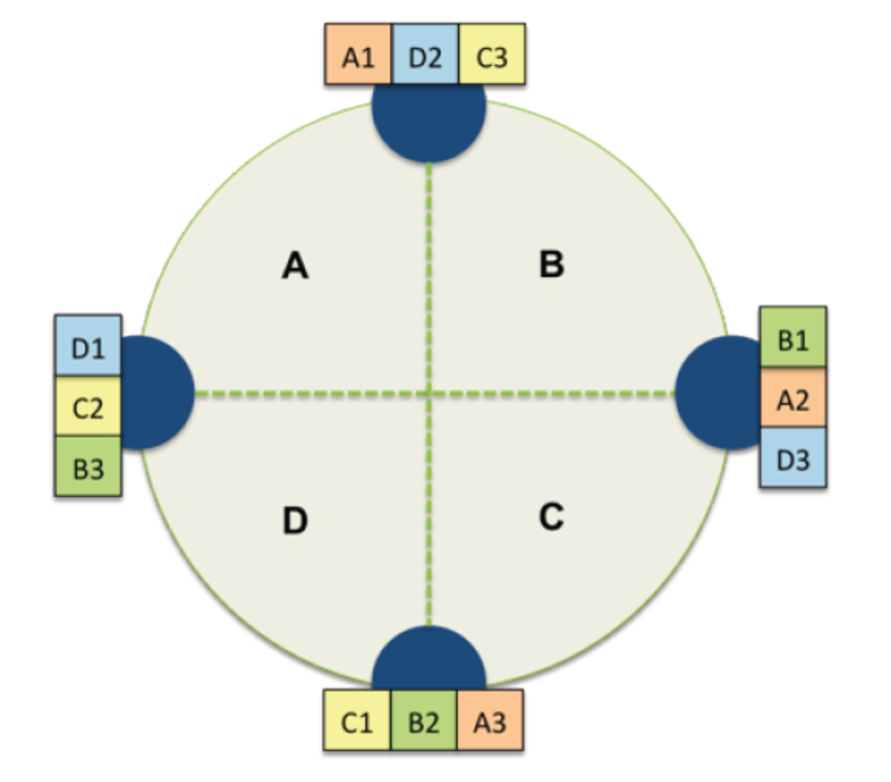
- NetworkTopologyStrategy: for multi-DC deployments (data center)
- Two replicas per DC
- Three replicas per DC
- Per DC
- First replica placed according to Partitioner
- Then go clockwise around ring until you hit a different rack
这种策略用于当你知道节点如何在数据中心(Data Center)分组的情况或者你希望部署集群横跨多个数据中心，此时你必须指定每个数据中心要多少个副本，(一般推荐设为2或者3）。在这种情况下，副本放置策略由数据中心自己决定。具体为，先由partitioner决定第一个node设为N1，在架子(rack1)上，属于数据中心DC1，则第一个副本放在N1，其他副本也必须分别放在DC1中，优先选择不是rack1的架子，如果没有其他rack，则只能放在rack1上。
比如如图所示，现在有两个数据中心，蓝色表示DC1，绿色表示DC2，DC1上有2个架子，分别是Rack1和Rack2。则如果partitioner选择的第一个节点是DC1的节点N3的话，那么副本R1就放在DC1的节点N3 上，而这个副本的下一个副本R2就放在同一个DC，也就是DC1的下一个rack上（如果有），它刚好发现，顺时针的下一个节点N4刚好也是DC1，但是是另外一个架子(Rack2),所以副本R2放在N4上。对于属于DC2的2个副本也遵循同样的策略。
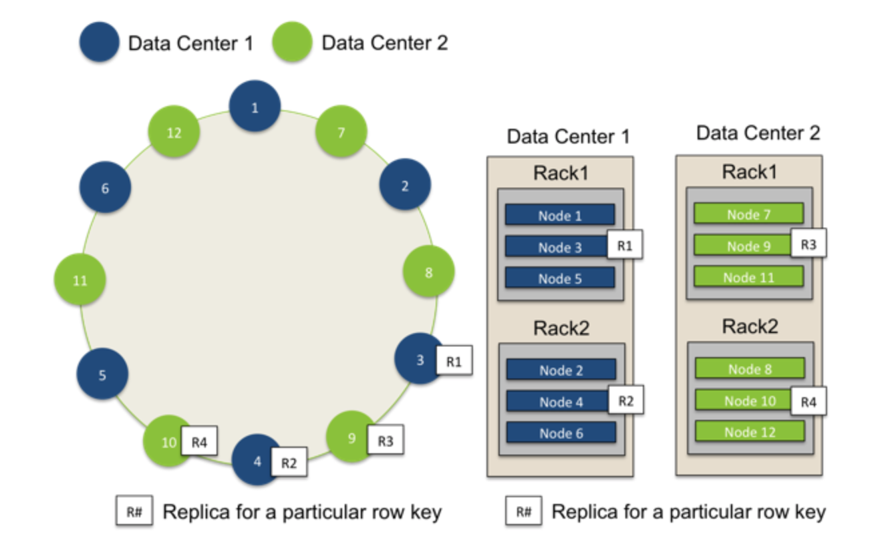
1 | CREATE KEYSPACE Excelsior WITH REPLICATION = { 'class' : 'SimpleStrategy','replication_factor' : 3 }; |
Snitches
Snitch决定了节点属于哪个数据中心和机架。Snitch通知Cassandra网络拓扑以便请求被有效的路由，并且允许Cassandra在服务器增加到数据中心或机架的时候能够分发副本。特别的，复制策略如何放置副本是基于新snitch提供的信息。Cassandra不会把副本放到一个机架里面（如果机架断电，那就over了）。
- Maps: IPs to racks and DCs. Configured in cassandra.yaml config file
- Some options:
- SimpleSnitch: Unaware of Topology (Rack-unaware)
- RackInferring(通过本机IP地址判断节点属于哪个DC和哪个rack): Assumes topology of network by octet of server’s IP address
- 101.201.301.401 = x.{DC octet}.{rack octet}.{node octet}
- PropertyFileSnitch: uses a config file（通过配置文件指定对应的数据中心和机架名称。具体的数据中心和机架的配置位于cassandra-topology.properties文件。）
- EC2Snitch: uses EC2
- EC2 Region = DC
- Availability zone = rack
- Other snitch options available
Writes
- Need to be lock-free and fast (no reads or disk seeks)
- Client sends write to one coordinator node in
Cassandra cluster- Coordinator may be per-key, per-client, or per-query
- Per-key Coordinator ensures writes for the key are serialized
- Coordinator uses Partitioner to send query to all replica nodes responsible for key
- When X replicas respond, coordinator returns an acknowledgement to the client
- Always writable: Hinted Handoff mechanism
- If any replica is down, the coordinator writes to all other replicas, and keeps the write locally until down replica comes back up.
- When all replicas are down, the Coordinator (front end) buffers writes (for up to a few hours).
- One ring per datacenter
- Per-DC coordinator elected to coordinate with
other DCs - Election done via Zookeeper, which runs a Paxos (consensus) variant
- Paxos: elsewhere in this course
- Per-DC coordinator elected to coordinate with
Writes at a replica node
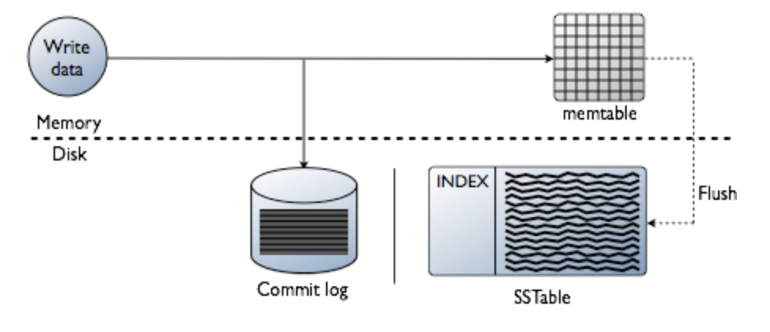
先将数据写进内存中的数据结构memtable，同时追加到磁盘中的commitlog中。memtable内容超出指定容量后会被放进将被刷入磁盘的队列(memtable_flush_queue_size配置队列长度)。若将被刷入磁盘的数据超出了队列长度，C会锁定写,并将内存数据刷进磁盘中的SSTable,之后commit log被清空。
- Log it in disk commit log (for failure recovery)
- Make changes to appropriate memtables
- Memtable = In-memory representation of multiple key- value pairs
- Cache that can be searched by key
- Write-back cache as opposed to write-through
- Later, when memtable is full or old, flush to disk
- Data file: An SSTable (Sorted String Table) – list of key-value pairs, sorted by key
- Index file: An SSTable of (key, offset) pairs
- And a Bloom filter (for efficient search)
Reads
Read: Similar to writes, except
- Coordinator can contact X replicas (e.g., in same rack)
- Coordinator sends read to replicas that have responded quickest in past
- When X replicas respond, coordinator returns the latest-timestamped value from among those X
- Coordinator also fetches value from other replicas
- Checks consistency in the background, initiating a read repair if any two values are different
- This mechanism seeks to eventually bring all replicas up to date
- A row may be split across multiple SSTables => reads need to touch multiple SSTables => reads slower than writes (but still fast)
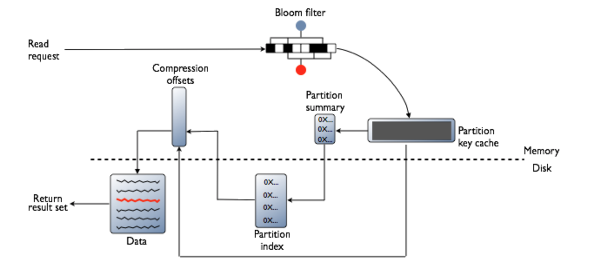
首先检查BloomFilter,每个SSTable都有一个Bloomfilter,用以在任何磁盘IO前检查请求PK对应的数据在SSTable中是否存在。BF可能误判但是不会漏判:判断存在,但实际上可能不存在,判断不存在,则一定不存在,则流程不会访问这个SSTable(红色)。若数据很可能存在，则检查PartitionKey cache(索引的缓存)，之后根据索引条目是否在cache中找到而执行不同步骤：
- 在索引缓存中找到
- 从compression offset map中查找拥有对应数据的压缩快。
- 从磁盘取出压缩的数据，返回结果集。
- 没有在索引缓存中
- 搜索Partition summary（partition index的样本集）确定index条目在磁盘中的近似位置。
- 从磁盘中SSTable内取出index条目。
- 从compression offset map中查找拥有对应数据的压缩快。
- 从磁盘取出压缩的数据，返回结果集。
Membership
- Any server in cluster could be the coordinator
- So every server needs to maintain a list of all the
other servers that are currently in the server - List needs to be updated automatically as servers join, leave, and fail
Gossip Style membership
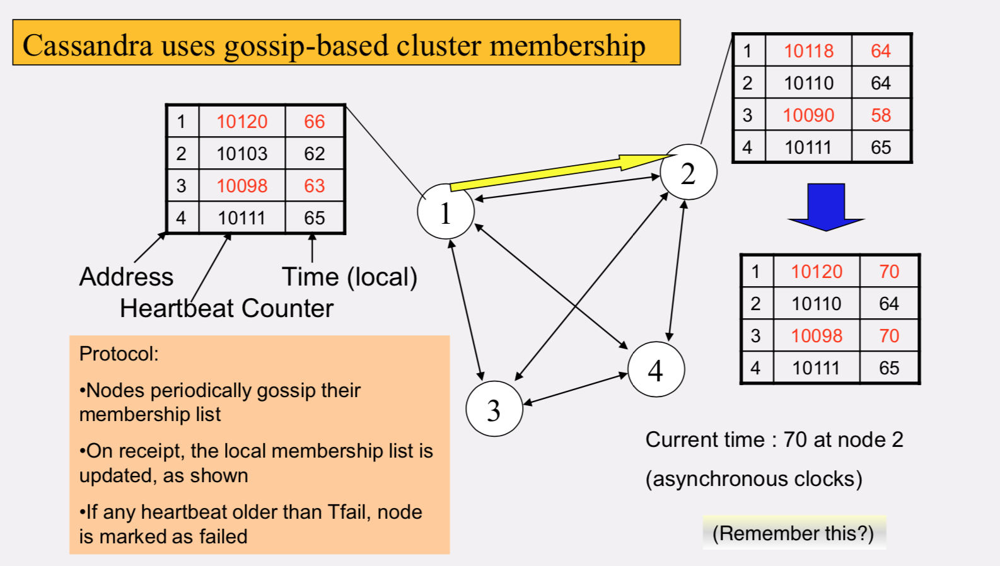
- Suspicion mechanisms to adaptively set the timeout based on underlying network and failure behavior
- Accrual detector: Failure detector outputs a value (PHI) representing suspicion
- Apps set an appropriate threshold
- PHI calculation for a member
- Inter-arrival times for gossip messages
- HI(t) = – log(CDF or Probability(t_now – t_last))/log 10
- PHI basically determines the detection timeout, but takes into account historical inter-arrival time variations for gossiped heartbeats
- In practice, PHI = 5 => 10-15 sec detection time
Consistency levels
Consistency level指定了读/写操作在通知客户端请求成功之前，必须确保已经成功完成读/写操作的replica的数量. Client is allowed to choose a consistency level for each operation (read/write)
- ANY: any server (may not be replica)
- Fastest: coordinator caches write and replies quickly to client
- ALL: all replicas
- Ensures strong consistency, but slowest
- ONE: at least one replica
- Faster than ALL, but cannot tolerate a failure
- QUORUM: quorum across all replicas in all datacenters (DCs)
- LOCAL_QUORUM: quorum in coordinator’s DC
- Faster: only waits for quorum in first DC client contacts
- EACH_QUORUM: quorum in every DC
- Lets each DC do its own quorum: supports hierarchical replies
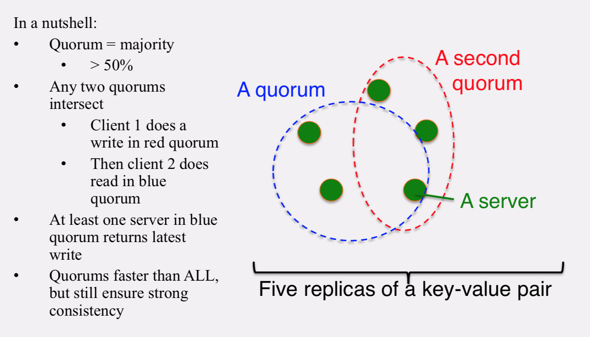
- Lets each DC do its own quorum: supports hierarchical replies
- LOCAL_QUORUM: quorum in coordinator’s DC
QUORUM in Detail
Several key-value/NoSQL stores (e.g., Riak and Cassandra) use quorums.
- Reads
- Client specifies value of R (≤ N = total number
of replicas of that key). - R = read consistency level.
- Coordinator waits for R replicas to respond before sending result to client.
- In background, coordinator checks for consistency of remaining (N-R) replicas, and initiates read repair if needed.
- Writes
- Client specifies W (≤ N)
- W = write consistency level.
- Client writes new value to W replicas and returns. Two flavors:
- Coordinator blocks until quorumis reached.
- Asynchronous:Justwriteandreturn.
- Two necessary conditions:
- W+R > N
- W > N/2
- Select values based on application
- (W=1, R=1): very few writes and reads
- (W=N, R=1): great for read-heavy workloads
- (W=N/2+1, R=N/2+1): great for write-heavy workloads
- (W=1, R=N): great for write-heavy workloads with mostly one client writing per key
Cassandra Vs. RDBMSs
- MySQL is one of the most popular (and has been for a while)
- On > 50GB data
- MySQL
- Writes 300 ms avg
- Reads 350 ms avg
- Cassandra
- Writes 0.12 ms avg
- Reads 15 ms avg
Orders of magnitude faster
RDBMS provide ACID
- Atomicity
- Consistency
- Isolation
- Durability
- Key-value stores like Cassandra provide BASE
- Basically Available Soft-state Eventual
consistency - Prefers availability over consistency
- Basically Available Soft-state Eventual
HBase
src https://seawaylee.github.io/2017/11/21/大数据/HBase/HBase学习笔记（一）-%20快速入门/
Unlike Cassandra, HBase prefers consistency (over availability)
- Single “Master” cluster
- Other “Slave” clusters replicate the same tables
- Master cluster synchronously sends HLogs over to slave clusters
- Coordination among clusters is via Zookeeper
- Zookeeper can be used like a file system to store
control information
API functions
- Get/Put(row)
- Scan(row range, filter) – range queries MultiPut
HBase 数据模型
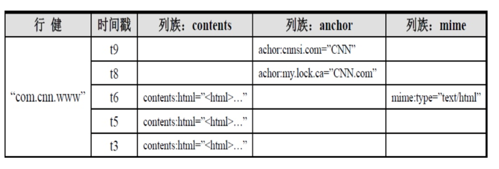
- 与nosql数据库一样,rowkey 是用来检索记录的主键。
- Hbase表中的每个列,都归属于某个列族。列表都以列族为前缀,例如 course:histroy, course:math 都属于course这个列族。
- 由 rowKey + columnFamily + version 唯一确定的单元
- 每个cell都保存着同一份数据的多个版本,版本通过时间戳来索引。时间戳的类型是64位整型。间戳可以由HBASE(在数据写入时自动)赋值,此时时间戳是精确到毫秒的当前系统时间。时间戳也可以由客户显式赋值。如果应用程序要避免数据版本冲突,就必须自己生成具有唯一性的时间戳。每个cell中,不同版本的数据按照时间倒序排序,即最新的数据排在最前面。为了避免数据存在过多版本造成的的管理(包括存贮和索引)负担,HBASE提供了两种数据版本回收方式。一是保存数据的最后n个版本,二是保存最近一段时间内的版本（比如最近七天）。用户可以针对每个列族进行设置
HBase 体系图
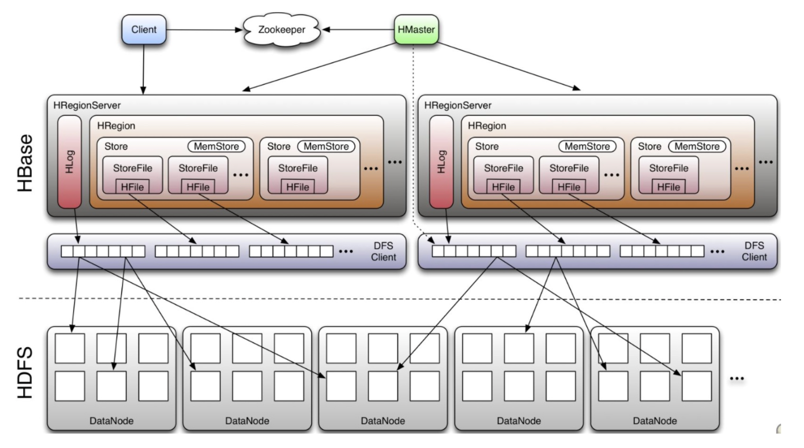
Design of HFile
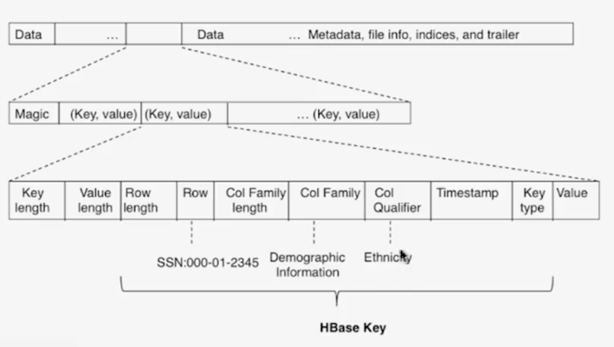
Writes
- Client向HRegionServer发送写请求
- HRegionServer将数据写到Hlog(write ahead log)。为了数据的持久化和恢复
- HRegionServer将数据写到内存(memstore)
- 反馈Client写成功
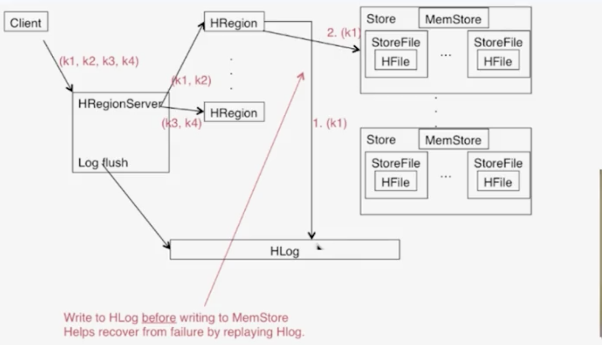
write ahead log guarantee the consistency
Write
- 通过ZK和 -ROOT- .META. 表定位HRegionServer
- 数据从内存和硬盘合并后返回给Client
- 数据块会缓存
Flush
- 当memstore数据达到阀值（默认64M），将数据刷到硬盘，将内存中的数据删除，同事删除HLog中的历史数据。
- 将数据存储到HDFS中
- 在Hlog中做标记点
数据合并过程
- 当数据块达到4块，HMaster将数据加载到本地，进行合并
- 当合并的数据超过256M，进行拆分，将拆分后的region分配给不同的HRegionServer管理
- 当HRegionServer宕机后，将HRegionServer上的Hlog拆分，然后分配给不同的HRegionServer加载，修改 .META.
- 注意：Hlog会同步到HDFS
HBase读写原理图
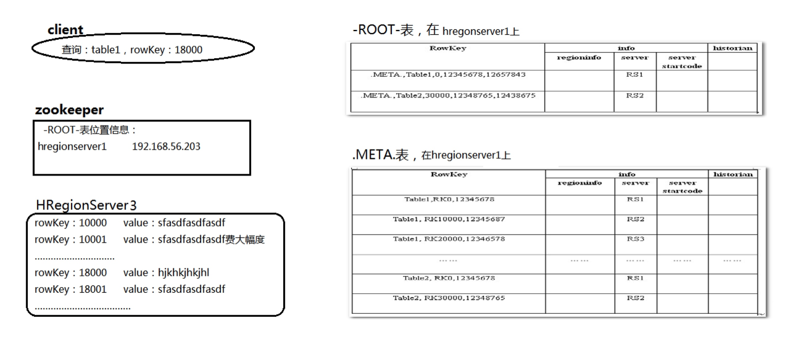